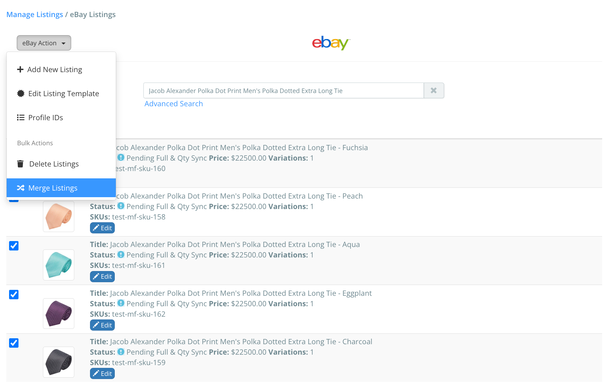
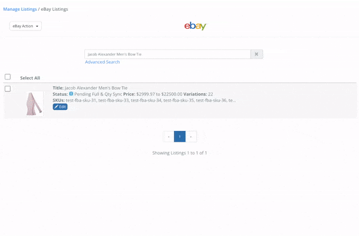
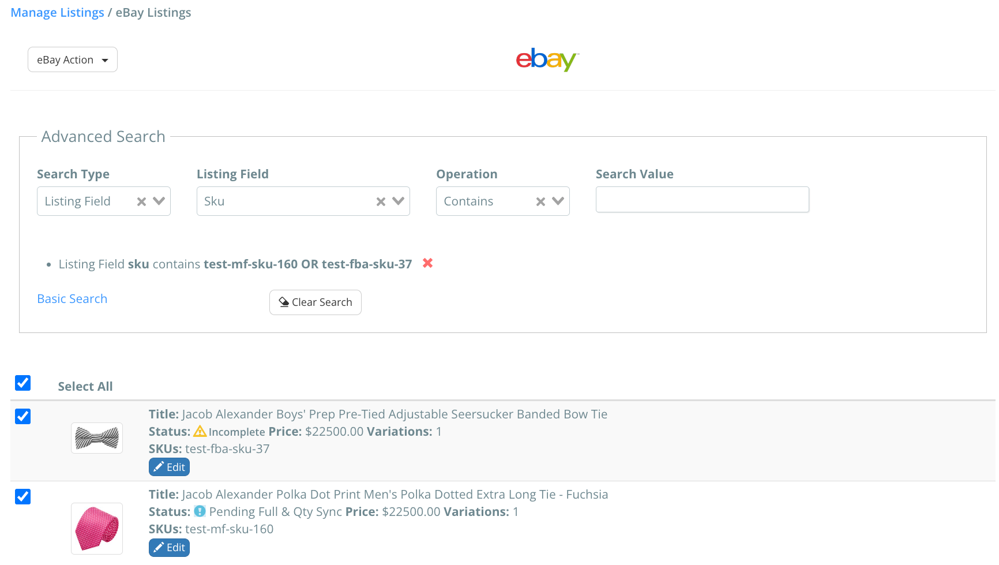

Learn how to merge or split two or more listings in Listing Mirror
Merging two or more listings will combine them, displaying your listings as variations on the market.
A market listing is defined as any item on the right side of the Manage Listings page.
These are your individual marketplace listings.
Merge two or more listings, creating variations
- From the Listings tab, select a desired marketplace
- Using the search bar, search for the listings.
- Click the box for each listing you'd like to merge.
- Using the Actions dropdown, click Merge Listings.

Split two or more listings, creating smaller variation, or simple listings
Splitting two or more listings will separate them, creating new simple listings, or smaller variation listings on a market.
- From the Listings tab, select a desired marketplace.
- Using the search bar, search for a variation listing and click Edit.
- Click the Actions dropdown, followed by Split Variations.
- If applicable, select between one of your variation options.
- Select a new name for your listings, and click Split Variations.

Use Advanced Search to search for multiple listings
If you have two or more listings that don't share a single search term, you can use Advanced Search to make multiple searches at once.
The below example shows a user searching for two different SKUs.
